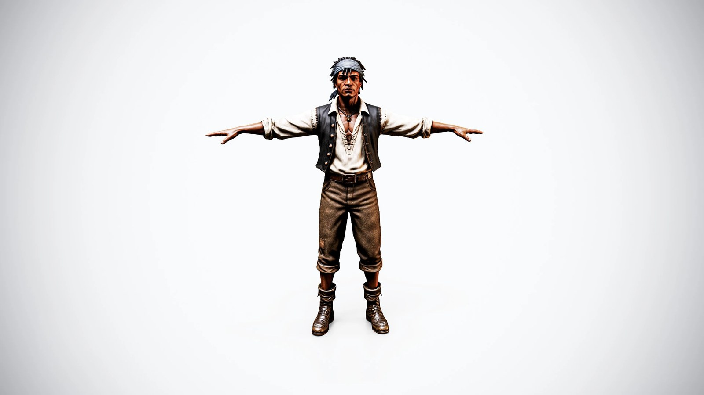

01
Tripo → Blender → Unity：AI 角色從生成、拓樸清理到 Humanoid 的完整流程
案例從四視圖參考開始，用 Tripo AI 產生 high poly 與初始 low poly，再進 Blender 修拓樸、拆 UV 與轉移 Base Color，接著以 Marmoset 烘焙細節、Substance Painter 製作材質、Rigify 綁定，最後在 Unity 設定 Humanoid Avatar。

AI 3D
★★★★☆
完整分析
技術／流程變更
這條流程把 AI 3D 明確放在前段：Tripo 負責 high-poly 起稿與初始 retopology，但最終可用的 low poly 仍要在 Blender 檢查關節區拓樸、UV、cage 與 bake，再接 Painter、Rigify 和 Unity Humanoid。
Production 影響
對遊戲角色量產最有價值的是 handoff 很清楚：AI 輸出不是終稿，而是 high／low 兩套來源；後續人工處理集中在 silhouette、變形拓樸、UV、烘焙與 skinning，較容易把 AI 納入既有角色 SOP。
導入測試與限制
來源只示範一名海盜角色，且自動 retopology 之後仍需要手動 cleanup。導入時應分角色、硬表面與服裝測試 Tripo 輸出的關節 edge flow、UV 可用性、烘焙錯誤與 Unity 動畫變形，不能只看正面生成品質。
BRIEF｜來源已驗證；證據深度較有限，完整分析會明確區分已知資訊與待驗證事項。